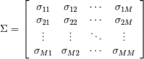
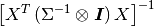

statsmodels.sandbox.sysreg.SUR¶
-
class
statsmodels.sandbox.sysreg.SUR(sys, sigma=None, dfk=None)[source]¶ Seemingly Unrelated Regression
Parameters: sys : list
[endog1, exog1, endog2, exog2,...] It will be of length 2 x M, where M is the number of equations endog = exog.
sigma : array-like
M x M array where sigma[i,j] is the covariance between equation i and j
dfk : None, ‘dfk1’, or ‘dfk2’
Default is None. Correction for the degrees of freedom should be specified for small samples. See the notes for more information.
Notes
All individual equations are assumed to be well-behaved, homoeskedastic iid errors. This is basically an extension of GLS, using sparse matrices.

References
Zellner (1962), Greene (2003)
Attributes
cholsigmainv (array) The transpose of the Cholesky decomposition of pinv_wexog df_model (array) Model degrees of freedom of each equation. p_{m} - 1 where p is the number of regressors for each equation m and one is subtracted for the constant. df_resid (array) Residual degrees of freedom of each equation. Number of observations less the number of parameters. endog (array) The LHS variables for each equation in the system. It is a M x nobs array where M is the number of equations. exog (array) The RHS variable for each equation in the system. It is a nobs x sum(p_{m}) array. Which is just each RHS array stacked next to each other in columns. history (dict) Contains the history of fitting the model. Probably not of interest if the model is fit with igls = False. iterations (int) The number of iterations until convergence if the model is fit iteratively. nobs (float) The number of observations of the equations. normalized_cov_params (array) sum(p_{m}) x sum(p_{m}) array  pinv_wexog (array) The pseudo-inverse of the wexog sigma (array) M x M covariance matrix of the cross-equation disturbances. See notes. sp_exog (CSR sparse matrix) Contains a block diagonal sparse matrix of the design so that exog1 ... exogM are on the diagonal. wendog (array) M * nobs x 1 array of the endogenous variables whitened by cholsigmainv and stacked into a single column. wexog (array) M*nobs x sum(p_{m}) array of the whitened exogenous variables. Methods
fit([igls, tol, maxiter])igls : bool initialize()predict(design)whiten(X)SUR whiten method.